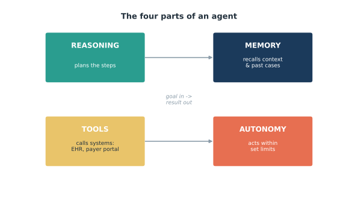
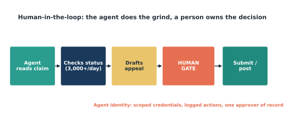

Edisi 3 — Anatomi Seorang Agent: reasoning, memory, tools, autonomy
Dewi, salah satu analis AP kita, bilang ke saya dia selama ini menghindari kata "agent" karena kedengarannya seperti kotak hitam yang bisa jadi kesalahannya kalau ada apa-apa. Jadi kita buka kotaknya bareng-bareng, dan ternyata isinya cuma empat bagian. Di akhir, dia bilang persis yang saya harapkan: "Oh — ini bukan sihir. Ini asisten yang sangat terorganisir."

Bagian pertama adalah reasoning: agent memecah satu goal jadi langkah-langkah. Kasih dia perintah "rekonsiliasi statement vendor ini" dan dia akan merencanakan — menarik ledger kita, mencocokkan statement, mencocokkan invoice, menandai yang nggak sinkron. Bagian kedua adalah memory: dia menyimpan konteks, jadi dia ingat kebiasaan vendor ini, exception terakhir yang kamu selesaikan, format statement mereka. Bagian ketiga adalah tools: dia bisa benar-benar menjangkau sistem — ledger, portal payer, email — dan melakukan sesuatu di sana, bukan cuma membicarakannya. Bagian keempat adalah autonomy: dia bisa mengambil langkah berikutnya sendiri, dalam batas yang kamu tentukan.
Gabungkan semuanya dan kalimat andalan kita akhirnya masuk akal secara teknis: chatbot menjawab karena dia cuma punya bagian reasoning-dan-kata-kata; agent bertindak karena dia juga punya memory, tools, dan autonomy yang dibatasi. Itulah bedanya kolega yang cuma bisa bilang apa yang harus dilakukan dengan kolega yang bisa bantu mengerjakannya.

Ini bagian yang bikin kekhawatiran Dewi reda. Autonomy sengaja dibatasi, dan ada gerbang di titik yang penting (Gambar 3.2). Dalam workflow klaim, agent bisa membaca, mengecek status, dan menyiapkan draf banding — ribuan per hari kalau perlu — tapi dia berhenti di gerbang manusia sebelum apa pun dikirim. Satu orang yang ditunjuk menyetujui. Dan semuanya berjalan di bawah "agent identity": agent punya kredensial scoped miliknya sendiri dan setiap tindakan tercatat, jadi kalau ada yang tanya "siapa yang melakukan ini dan kenapa," jawabannya jelas. Itu bukan kotak hitam. Itu malah lebih bisa dilacak dibanding sore yang sibuk penuh klik manual.
Begitu kamu bisa menyebutkan bagian-bagiannya, rasa takut akan hal yang nggak dikenal menyusut jadi sesuatu yang bisa dikelola. Reasoning yang merencanakan, memory yang mengingat, tools yang mengerjakan, autonomy yang menjalankan — dan kamu yang pegang gerbangnya. Kesimpulan Dewi tepat sekali: bukan sihir, cuma asisten terorganisir yang kebetulan nggak pernah capek. Dan penilaian soal apa yang benar-benar tepat? Itu tetap di tangannya.
Sumber
- Kerangka umum industri untuk komponen agent — reasoning, memory, tools, autonomy (2026).
- solventum.com; healthcarefinancenews.com — contoh throughput (3.000+ pengecekan status klaim/hari).
- kore.ai; Generative, Inc. (2026) — "chatbot menjawab; agent bertindak."